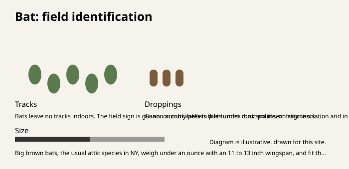
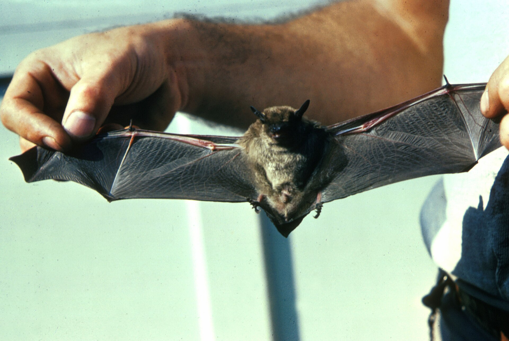

Animal guide - upstate New York
Bat Removal in Upstate NY
Bats do not chew their way in. They slip through a gap the width of your thumb, a lifted shingle, an open chimney joint, a warped piece of fascia, and then they stay for years. A colony grows quietly until guano, odour and scratching at dusk give it away. Bat work in New York is timing work above everything else, because the law and the bats' own breeding cycle close the door on exclusion for two long stretches each year. This page explains those windows, the exclusion process, and the costs.
What are the signs of a bat problem?
- Scratching, fluttering or faint squeaking at dusk and dawn from walls or the attic
- Guano pellets under a roost or below a roof gap, dry and crumbly like mouse droppings but full of insect parts
- Brown staining and rub marks around a small gap at the roofline, chimney or fascia
- A musty, ammonia smell from the attic in warm weather
- Bats seen leaving the roofline in a line at dusk, evening after evening
- A single bat found inside the living space, which often means a colony nearby


Bats leave no tracks indoors. The field sign is guano: crumbly pellets that turn to dust and insect fragments when rolled, unlike mouse droppings. Guano accumulates in piles under roost points, on attic insulation and in wall voids below gaps. Old piles can be deep in long-used roosts. Big brown bats, the usual attic species in NY, weigh under an ounce with an 11 to 13 inch wingspan, and fit through a 3/8 inch gap.
What damage do bats do inside a home?
Bats damage a home slowly and mostly by accumulation. Guano piles corrode wood and drywall, stain ceilings, and crush insulation until it stops insulating. The urine and droppings bring a persistent ammonia odour that heat pushes into the rooms below. Unlike rodents, bats do not chew wiring or timber, and they do not enlarge their entry gaps, which is why a colony can live above a ceiling for years before anyone notices. The repair bill is usually about cleanup and sealing, not structure.
How do bats behave through the New York year?
New York attic colonies are mostly big brown bats, with little browns now far less common than they were. Bats return to the same roost year after year, navigate by memory, and squeeze in and out at dusk to feed on insects. In spring, females gather into maternity colonies and raise a single pup each. The pups cannot fly for their first weeks, and that fact drives the whole legal calendar: seal a colony in during pup season and the young die inside while the adults batter themselves against the exits.
Read the year like an operator does. April: colonies return, and the short spring window is open for exclusion before maternity season. May 1: the blackout starts and stays until August 15. Late August and September are the main exclusion season, the best weeks of the year to seal a house while bats still fly out nightly. October 1 the winter blackout begins. Winter itself is for inspections, quotes and planning, plus the odd bat in the living space, which is handled as a health call, not an exclusion.


Are bats a health risk to my family or pets?
Two health rules matter with bats. First, rabies: a small share of bats carry it, and a bite can be tiny enough to miss, so a bat found in a room with a sleeping person, a child, or anyone who cannot say whether contact happened should be captured for testing, not released, and your county health department should get a call. Second, histoplasmosis: the fungus can grow in old, deep guano, so large cleanups are respirator work. Day-to-day, a sealed-off attic colony is a low risk, but it should still be excluded and cleaned, not lived with.
What does New York law say about bat removal?
New York protects roosting bats with two blackout windows when exclusion and disturbance are off the table: May 1 to August 15, covering the maternity season when pups cannot fly, and October 1 to March 31, covering winter hibernation for roosting colonies. Work happens in the two open windows, early spring and late summer into fall. Bats themselves are protected wildlife, not pests to be poisoned or trapped out, and poisoning bats is illegal as well as useless. Any operator who offers to exclude a colony in June is offering to break the rule that keeps pups alive, and that tells you what you need to know about the operator.
Can I handle bat removal myself?
There is very little safe DIY in bat work. Homeowners can note where bats exit at dusk, which genuinely helps the inspection, and can keep attic hatches and interior gaps closed so bats stay out of living space. Everything else backfires: sealing gaps in summer traps pups, foggers and mothballs do not move a colony, and bright lights and ultrasonic boxes show no lasting effect on a roost that bats have used for years. Exclusion is a whole-roofline job where one missed gap restarts the problem, so it belongs with an experienced operator.
One last thing on choosing help. Get the inspection findings in writing, with photographs of each entry point, and get removal, sealing and cleanup as separate lines on the estimate. Ask what material closes each hole, because foam and caulk alone are not exclusion. And ask the season question out loud: if the timing is wrong for this species, an honest operator will tell you to wait, and offer the inspection and quote now so the work is ready the week the window opens.
How does humane bat removal work, step by step?

Inspect the roofline and attic at the right hour
Bat work starts with a dusk watch or a careful roofline survey to find exit gaps, guano and roost points. Bats need only 3/8 of an inch, so the survey covers ridge caps, chimney flashing, fascia joints, vents and shingle edges, and every gap is photographed and listed.
Fit one-way valves at the active exits
In an open work window, one-way valves or tubes go over the active exits. Bats leave at dusk to feed and cannot get back in. Secondary gaps are sealed first so the valves are the only way out, which is what makes the count of exits reliable.
Seal the whole structure, not just the hole
Every remaining gap is closed with the right material for the spot: metal flashing, backer rod and sealant, vent screening and chimney caps. This full-perimeter seal is the difference between exclusion and a short pause before the colony finds the next gap.
Clean up guano and check the attic
After the colony is confirmed out, guano is removed with respirator protection, contaminated insulation is taken out where needed, and the attic is disinfected. In blackout months this step, and only this kind of step, is planned and quoted so the work is ready when the window opens.
In the local data
The bat records behind these pages hold 143 research-grade iNaturalist observations across the 7 bat species recorded in the ten town areas: big brown bat (105), eastern red bat (14), little brown bat (10), northern hoary bat (4), silver-haired bat (4), tri-coloured bat (4) and eastern small-footed myotis (2). Bats were recorded in all 10 of the 10 town areas, and the big brown bat is the species logged most often.
Data: iNaturalist, 25 km radius per town, fetched November 2026.
How much does bat removal cost?
| Service | Typical range | Notes |
|---|---|---|
| Inspection and entry-point survey | $150-$300 | Often credited toward the work when you proceed. |
| Single-animal humane removal | $300-$600 | One animal, one entry point, straightforward access. |
| Bat exclusion, full home | $800-$2,500 | Colony work: one-way valves, full seal, guano check. |
| Attic cleanup and disinfection | Quoted after inspection | Depends on droppings volume and insulation condition. |
Bat pricing turns on colony size and roofline condition. A small colony with two or three gaps sits at the low end of the exclusion band. A tall, older home with a long gap list, chimney work and guano cleanup sits at the top, and cleanup is always quoted after the attic has actually been seen.
These are typical market ranges for upstate New York, published so you can sanity-check any quote. They are not a quote for your home: access, entry count, young in the den and cleanup volume move the real number, which is why the inspection comes first and the estimate is written.
Bat removal in your town
The method on this page is state-wide, but the animal pressure, housing stock and season are local. These town pages combine the bat method with each town's housing, waterways and cost notes, including sub-services like attic, chimney and under-deck work, babies, damage repair and emergencies.
Ithaca Binghamton Poughkeepsie Kingston Newburgh Utica Saratoga Springs Watertown Auburn Elmira
Bat removal questions, answered
Can bats be removed during maternity season in New York?
No. From May 1 to August 15, roosting bats cannot legally be disturbed or excluded in New York, because flightless pups would be trapped inside. The winter window, October 1 to March 31, is also closed while colonies hibernate. Ethical operators inspect and quote during blackouts, then do the exclusion in the open windows: early spring, or late summer into fall.
Can I use traps or poison to get rid of bats?
No, and neither can a licensed operator. Bats are protected wildlife in New York, and poisoning them is illegal. It also fails on its own terms, because poisoned bats die in wall voids and create an odour and insect problem while the entry gaps stay open for the next colony. The legal and effective method is exclusion: one-way exits plus a full seal, timed outside the blackout windows.
How do you find where bats are getting in?
Two ways, used together. A dusk watch shows bats streaming out of the active exits in the first half hour after sunset. A daylight roofline survey then finds the gaps themselves: look for staining, rub marks and guano below a joint or shingle edge. Bats need a gap of only 3/8 of an inch, so the survey has to cover the entire perimeter, not just the obvious exit.
What does bat poop look like, and is it dangerous?
Bat guano looks like mouse droppings at a glance, dark pellets about the size of a grain of rice, but it crumbles into dust and shiny insect fragments when rolled between gloved fingers, while mouse droppings stay hard. Old, deep guano can grow the fungus behind histoplasmosis, so attic piles should not be disturbed dry. Cleanup uses respirators and wet methods, and big accumulations are a professional job.
What kind of damage do bats cause in an attic?
Bats do not chew, so wiring and timber are safe from them. The damage is accumulation: years of guano and urine corrode wood, stain the ceiling below, crush insulation flat and leave an ammonia smell that worsens in summer heat. Long-used roosts can hold surprisingly deep piles. The fix after exclusion is removal of the waste, replacement of ruined insulation where needed, and disinfection of the roost area.
What should I do if there is a bat in my house tonight?
Isolate it. Close interior doors, open an exterior door or window in that room, put a towel along the gap under the door, and keep people and pets out. Do not touch it with bare hands. If anyone was asleep in the room, or a child was in there, do not let it escape: call your county health department for guidance, because that bat may need testing for rabies.
Do you use poison for bats in the attic or around the home?
No. Poison is not part of humane bat work on this site, and for good reason. A poisoned animal usually dies somewhere unreachable, in a wall, a flue or under a floor, and the entry point stays open for the next animal anyway. Eviction, one-way doors where they fit, live capture where they do not, and then sealing solves the problem at the structure, which is where it actually lives.
Will you seal the entry points, or just remove the animal?
Sealing is the point of the job, and any quote that only covers removal is half a quote. The process here runs in order: inspect and map every entry, evict or capture the bats, confirm the space is empty, then close each opening with materials the animal cannot chew, dig or pry through. Removal without exclusion is a short rental of an empty attic, and the next tenant rarely waits a full season to move in.
Are wildlife removal operators licensed and insured in New York?
They should be, and you can check before anyone climbs your roof. Nuisance Wildlife Control Operators in New York work under a NYS DEC licence, carry insurance for roof and attic work, and should give you the licence details on request. The checklist is simple: licence, insurance, a written estimate with line items, and a method that starts with inspection and ends with sealing. An operator who cannot produce the first two has not earned the job.
How fast can a wildlife technician get to my home?
Response time depends on where in upstate New York you are and what the bat is doing. An animal in the living space, a chimney or a wall void is treated as urgent and usually gets a same-day or next-day response across the towns this site covers. Attic evictions and barrier work are booked as inspections first, normally within a few days, and the written quote follows the inspection, not a guess over the phone.
How much does bat removal cost in upstate New York?
The canonical bands on this site apply to every town: inspections run $150 to $300 and are often credited toward the work, a single-animal humane removal is typically $300 to $600, full bat exclusion runs $800 to $2,500, and attic cleanup is quoted after inspection because it depends on what the animals left behind. Bat pricing turns on colony size and roofline condition. A small colony with two or three gaps sits at the low end of the exclusion band. A tall, older home with a long gap list, chimney work and guano cleanup sits at the top, and cleanup is always quoted after the attic has actually been seen.